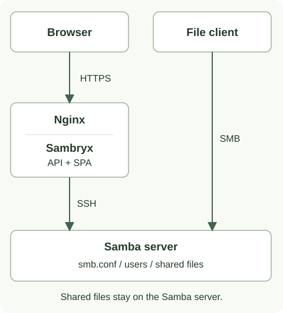
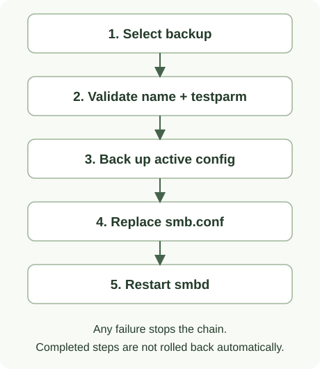

Архитектура Sambryx
Панель состоит из React SPA и Spring Boot API в одном JAR и Docker-образе. Samba работает отдельно; панель выполняет административные команды только через SSH.
Компоненты и данные

| Компонент | Назначение | Где находятся данные |
|---|---|---|
| Браузер | React/TypeScript, форма подключения, интерфейс управления | Серверная сессия определяется cookie; UI не является источником разрешений. |
| Nginx | HTTPS и проксирование к API/SPA | TLS-файлы подключаются с хоста. |
| Sambryx | Java 21, Spring Boot 3.4.0, Spring Security | HTTP/SSH-сессии находятся в памяти процесса. |
known_hosts |
Доверенные публичные ключи SSH-серверов | Файл на Docker-хосте, read-only подключение в панель. |
| Samba-сервер | SSH, Samba, файловая система, локальные пользователи и группы | smb.conf, его backup, базы Samba и пользовательские файлы остаются на сервере. |
Пересоздание контейнера панели завершает её сессии, но не удаляет данные Samba. При встроенном Samba-узле его конфигурация, идентичности и файлы хранятся в отдельных постоянных томах. Состав томов и правила обновления — в Production Compose.
Путь запроса
- SPA обращается к
/api/черезfrontend/src/lib/api.ts. Для изменяющего запроса клиент получает cookieXSRF-TOKENи передаётX-XSRF-TOKEN; при отсутствии токена запрос не отправляется. Публичный вход также защищён CSRF. - Spring Security и проверка серверного срока сессии допускают запрос к контроллеру. Контроллер передаёт идентификатор сессии сервису нужной функциональной области.
- Сервис вызывает
CommandExecutor.ExecutionSessionManagerконтролирует жизненный цикл операции и направляет её вSshSessionManager; команды формируются черезLinuxCommands. - SSH-сервер выполняет команду с правами подключённого пользователя и разрешениями sudo. Backend получает exit code и вывод, формирует ответ API.
- UI показывает результат. Изменяющие запросы автоматически не повторяются: потеря ответа не доказывает, что действие не выполнилось.
Границы безопасности
- SSH-хост проверяется по
known_hosts; принятие нового ключа из UI не предусмотрено. - Вход использует SSH-реквизиты сервера. Отдельной базы пользователей панели нет.
- По умолчанию сессия истекает после 15 минут бездействия. Уже принятая операция имеет ограниченный период завершения; подробности — в правилах сессий.
- Production Nginx заменяет forwarded-заголовки. Прямой HTTP-доступ к backend не публикуется.
Лимит входа использует
getRemoteAddr(); корректность адреса зависит от настройки прокси. - Возможность команды определяется sudo policy сервера. Успешный SSH-вход или чтение файла не подтверждают право записи, восстановления или перезапуска службы.
- Файловый менеджер ограничен разрешёнными корнями; символические ссылки разрешены только при нахождении разрешённого конечного пути внутри этих корней.
Конфигурация и восстановление
SmbConfParser разбирает и изменяет smb.conf; SambaConfigService читает, сохраняет
и восстанавливает его через SSH.
При сохранении создаётся backup, содержимое записывается во временный файл
/tmp/smb.conf.tmp, проверяется testparm, переносится в целевой путь и перезапускается smbd.

При восстановлении сначала проверяются имя и синтаксис выбранной копии, затем создаётся копия текущей конфигурации, заменяется целевой файл и перезапускается служба. Хранятся 10 новейших обычных backup-файлов. Ошибка этапа прекращает цепочку; предыдущие действия автоматически не откатываются. Ручной backup не применяет форму и не перезапускает Samba. Подробности — в руководстве по копиям.
Структура исходников
| Путь | Содержимое |
|---|---|
frontend/src/pages/, components/, lib/ |
Страницы, компоненты, HTTP-клиент и локализация |
src/main/java/mari/samba/auth/, session/, config/ |
Аутентификация, серверные сессии, Security и настройки |
share/, user/, group/, filesystem/ |
Ресурсы, локальные учётные записи и файловые операции |
smbconfig/, monitoring/, ad/, fstec/ |
Конфигурация, мониторинг, доменные операции, анализ правил |
infra/, core/ |
SSH, команды, парсер, ответы и исключения |
src/test/java/ |
Backend unit/component/integration tests |
tools/browser/ |
Отдельный Java/JUnit/Playwright-проект, HTTP API подменён |
tools/smoke/ |
Отдельный Java/JUnit-проект, Docker и реальный Compose TLS/SSH/SMB |
scripts/ci/ |
Классификация CI, проверки документов/артефактов и публикация |
deploy/production/ |
Nginx, шаблоны окружения и тестовый Samba-узел |
Сборка и проверки
Maven устанавливает локальные Node/npm, выполняет npm install и npm run build,
копирует frontend/dist в JAR. Dockerfile упаковывает готовый JAR с JRE 21;
Maven и Node в образе выполнения не нужны.
Backend проверяется JUnit, Mockito и Spring Security Test. Frontend имеет Node unit-тесты, ESLint и Java-браузерные сценарии. Compose smoke отдельно проверяет настоящие TLS/SSH/SMB, сохранность данных и backup/restore. Эти уровни не взаимозаменяемы и не доказывают работу на любой ОС или в реальном домене AD.
Команды — в разработке и тестировании. Выбор jobs и выпуск по тегу — в поставке.